01. Datos Cuantitativos Discretos
Contexto del problema: Un administrador de TI en un Data Center registra el número de servidores que requieren mantenimiento preventivo por cada rack. Se evaluaron 100 racks para determinar la carga de trabajo del equipo de soporte.
Registro de los 100 Datos Ordenados (N=100)
Tabla de Frecuencias
| Clase (Servidores) | Frec. Absoluta (fa) | Frec. Relativa (fr) | Frec. Acumulada (facum) |
|---|---|---|---|
| 0 Servidores | 40 | 40% | 40% |
| 1 Servidor | 30 | 30% | 70% |
| 2 Servidores | 15 | 15% | 85% |
| 3 Servidores | 10 | 10% | 95% |
| 4 Servidores | 5 | 5% | 100% |
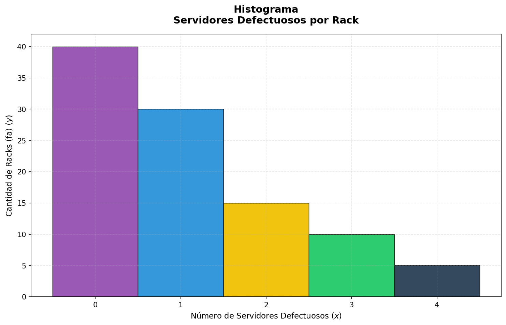
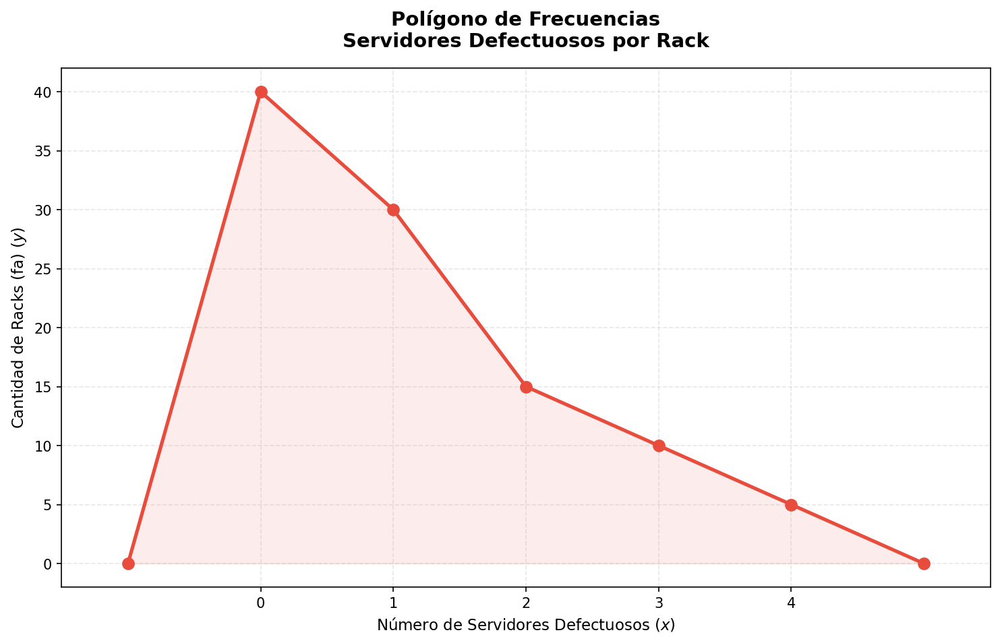
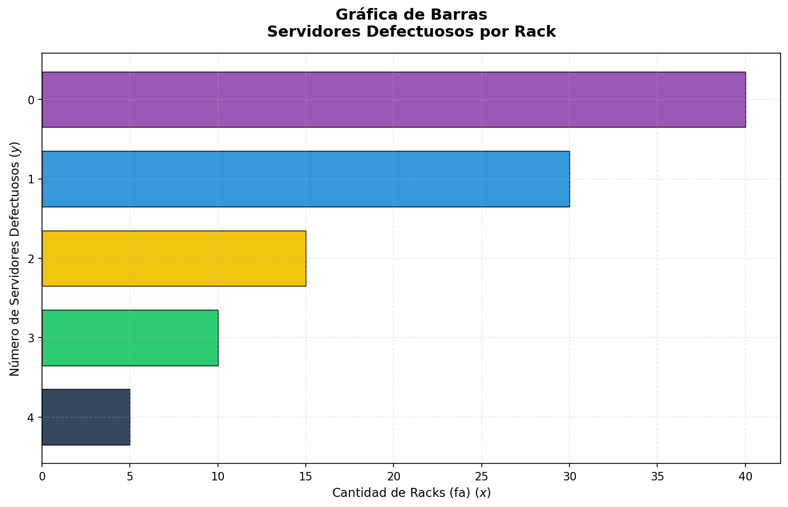
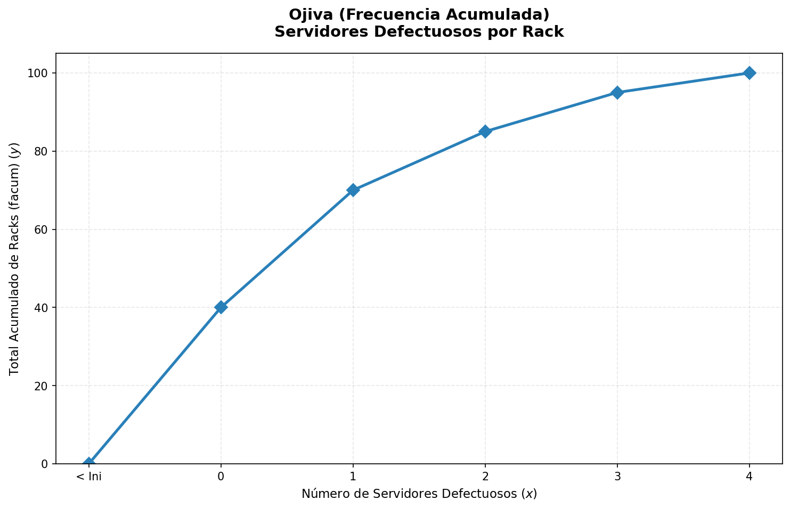
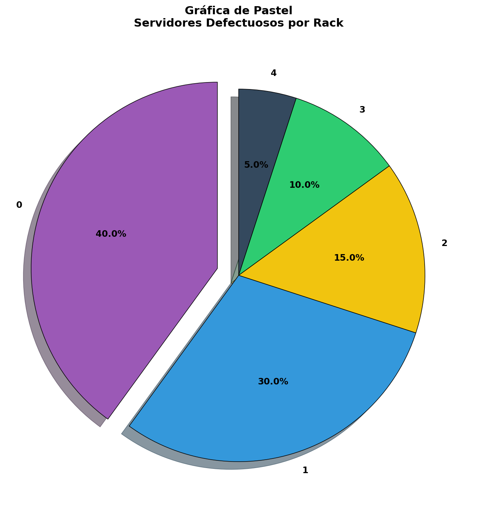
02. Datos Cuantitativos Continuos (8 Clases)
Contexto del problema: Se realizaron 100 pruebas de estrés en una red empresarial para medir la velocidad de descarga (en Mbps) durante las horas pico. Esto permitirá dimensionar el ancho de banda necesario para el próximo año.
Registro de los 100 Datos Ordenados (N=100)
Tabla de Frecuencias Agrupadas
| Clase | Lím. Inf. | Lím. Sup. | Marca de Clase | fa | fr | facum |
|---|---|---|---|---|---|---|
| Clase 1 | 50.0 | 60.0 | 55.0 | 5 | 5% | 5% |
| Clase 2 | 60.0 | 70.0 | 65.0 | 10 | 10% | 15% |
| Clase 3 | 70.0 | 80.0 | 75.0 | 15 | 15% | 30% |
| Clase 4 | 80.0 | 90.0 | 85.0 | 25 | 25% | 55% |
| Clase 5 | 90.0 | 100.0 | 95.0 | 20 | 20% | 75% |
| Clase 6 | 100.0 | 110.0 | 105.0 | 12 | 12% | 87% |
| Clase 7 | 110.0 | 120.0 | 115.0 | 8 | 8% | 95% |
| Clase 8 | 120.0 | 130.0 | 125.0 | 5 | 5% | 100% |
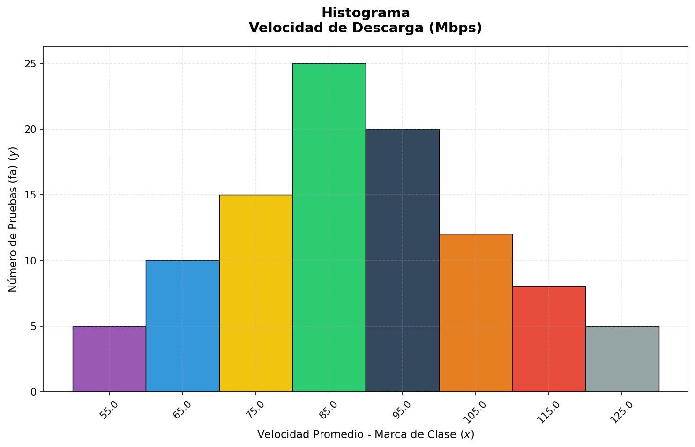
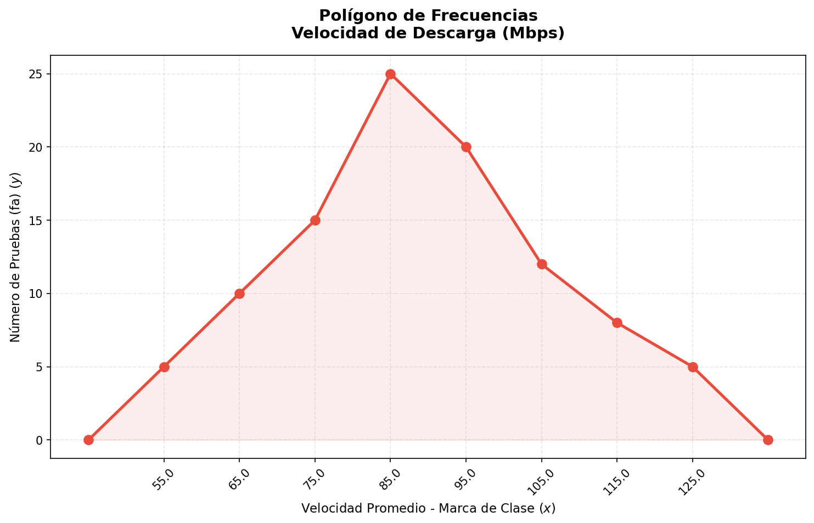
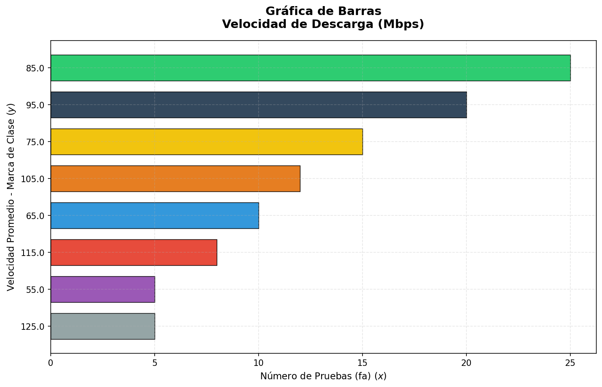
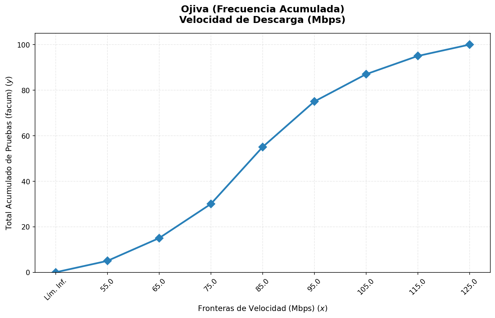
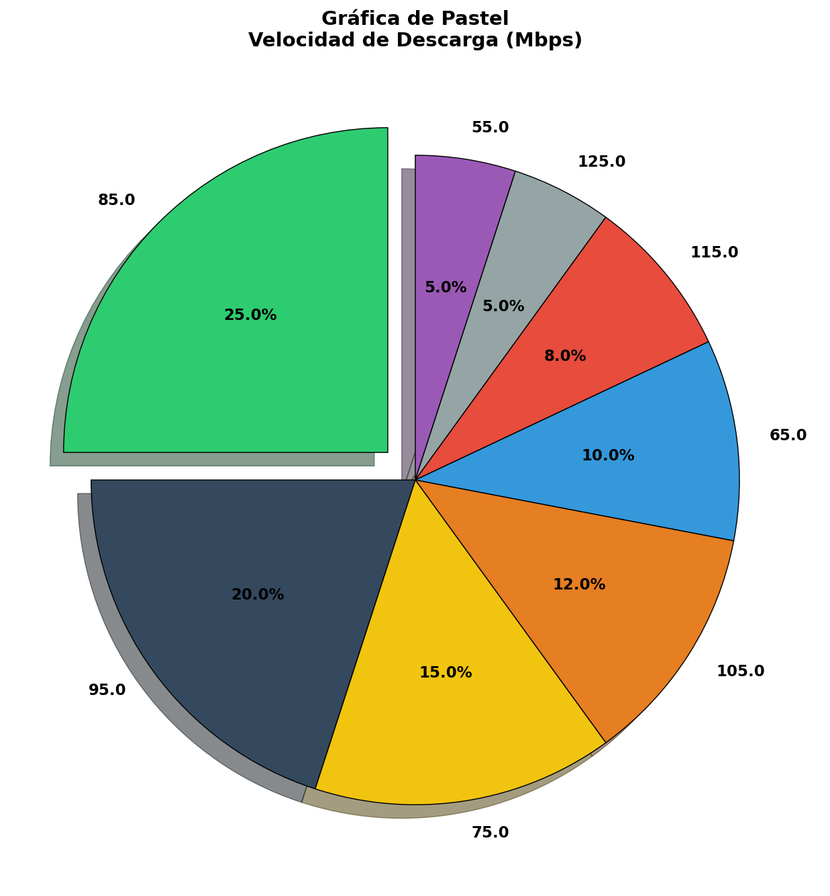
03. Datos Cualitativos
Contexto del problema: Una consultora de software encuestó a 100 desarrolladores sobre su lenguaje de programación preferido para iniciar nuevos proyectos de Backend en 2026.
Registro de los 100 Datos Ordenados (N=100)
Tabla Categórica
| Categoría (Lenguaje) | fa | fr | facum |
|---|---|---|---|
| Python | 35 | 35% | 35% |
| NodeJS | 25 | 25% | 60% |
| Java | 20 | 20% | 80% |
| C# | 10 | 10% | 90% |
| Go | 10 | 10% | 100% |
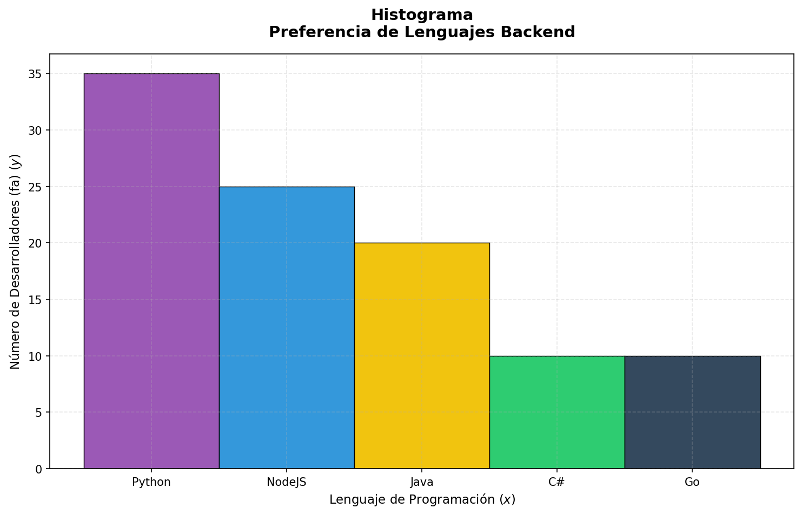
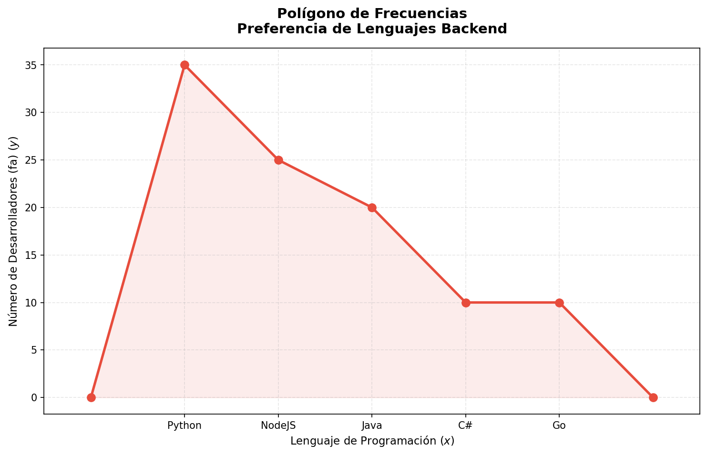
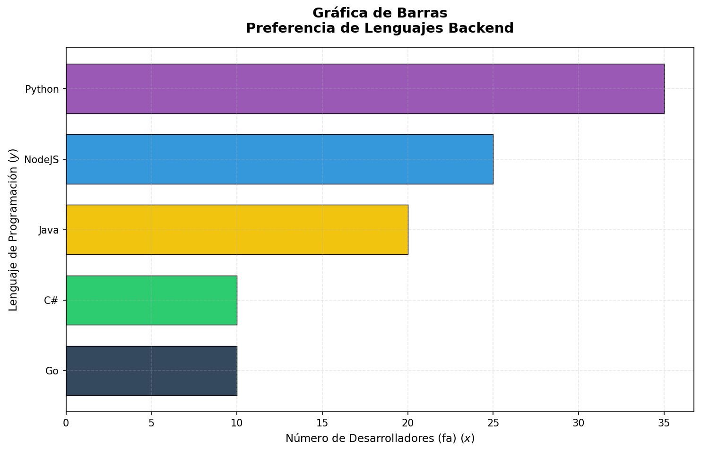
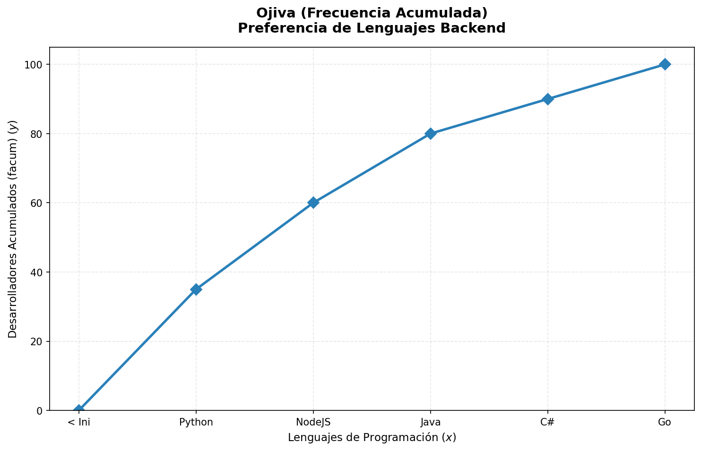
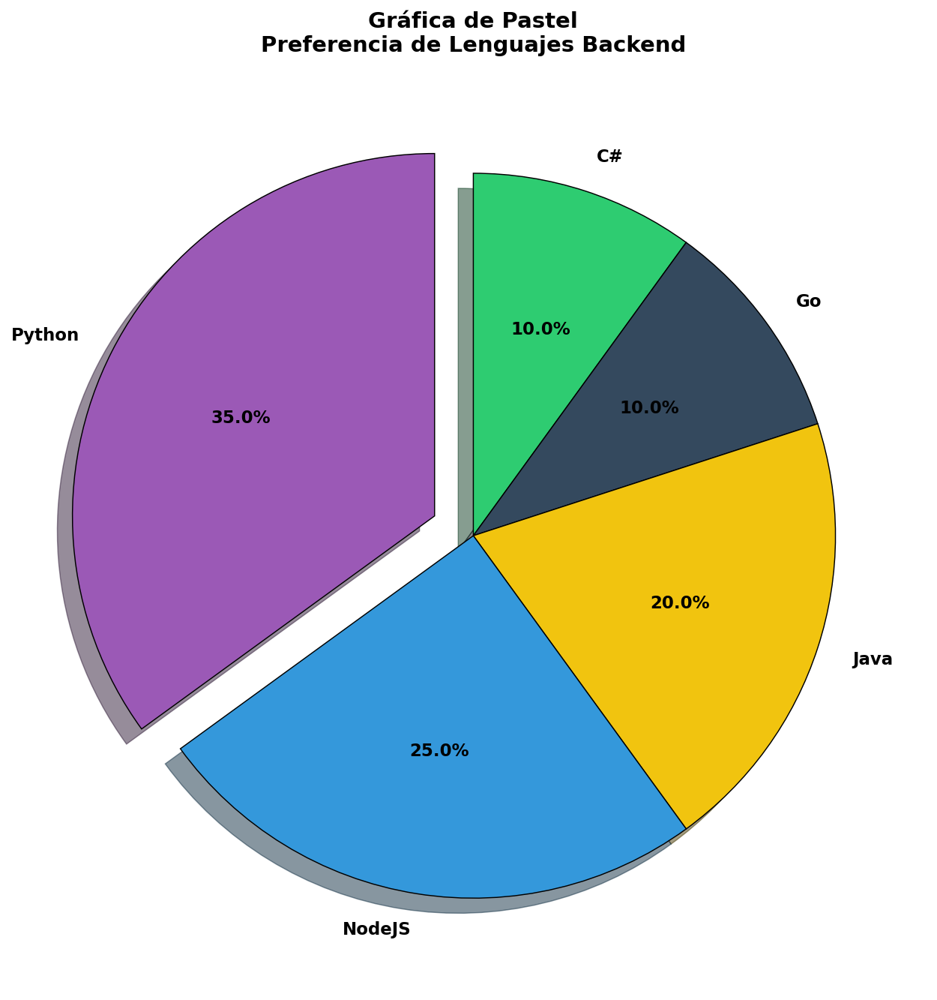